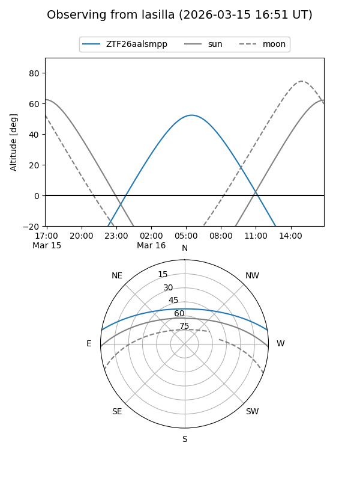
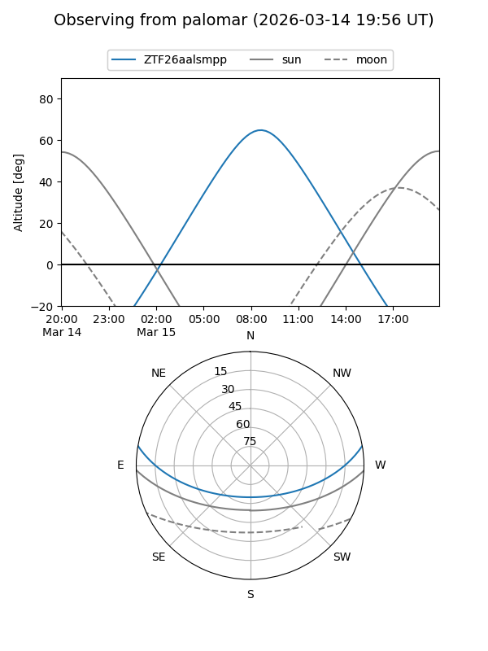

ZTF26aalsmpp
Target ZTF26aalsmpp at 2026-03-15 11:05
Aliases and brokers:
FINK: link
Lasair: link
ALeRCE: link
alt names
ZTF26aalsmpp (ztf,fink_ztf)
Coordinates:
equatorial (ra, dec) = 185.0254,+8.41016
equatorial (HMS+DMS) = 12:20:06.10,+08:24:36.57
galactic (l, b) = (279.8696,+69.86631)
Flags:
Photometry:
last ztfg=19.66
1 ztfg detections
Lightcurve
Visibility


Additional plots